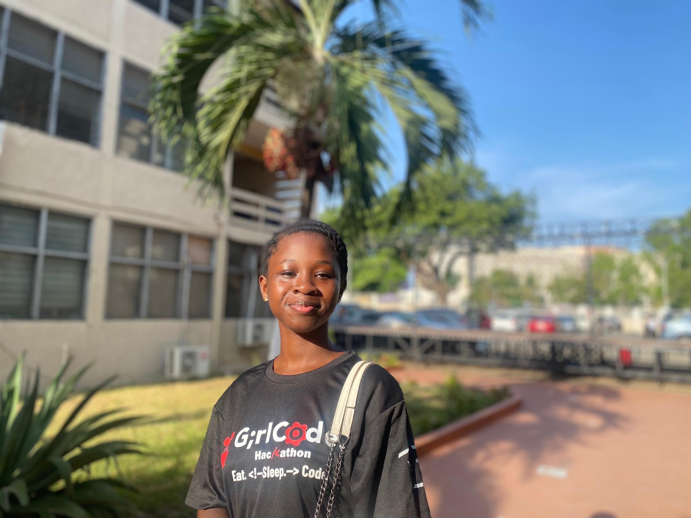

Rejoice Akosua
Contact Information
Email:dzankurejoice39@gmail.com
Phone: (233) 539-070-438
Location: Adenta, Greater Accra
Summary
Motivated Cybersecurity student with hands-on experience in networking, system configuration, and application development.
Eager to contribute, learn, and grow in a professional cybersecurity environment.
Education
Bachelor of Science in Cyber Securty
Accra Technical University, Accra, Greater Accra
Start: January 2024 -End: September 2027
Experience
Junior Network Engineer
Electricity Company of Ghana, Ho, Volta Region
September 2024 - December 2024
- Assisted in basic network setup, troubleshooting, and maintenance activities.
- Participated in cable termination and network connectivity tasks
- Assisted with remote system access and technical support activities.
- Learned and applied networking concepts to support daily IT operations.
- Supported computer hardware installation, configuration, and maintenance.
Junior Data Analyst
Ghana Revenue Authority, Accra, Greater Accra
September 2025-December 2025
- Maintained confidentiality and security of sensitive organizational data
- Analyzed datasets and generated reports to support decision-making processes
- Performed data entry and validation to ensure accuracy and consistency of information
- Assisted in collecting, organizing, and maintaining data records to support departmental operations
Skills
- Attention to Detail
- Computer Hardware Maintenance
- Teamwork
- Problem-Solving
Certifications
- Introduction to Cybersecurity Certificate (Cmpleted: March 2026)
- Getting Started with Cisco Packet Tracer Certificate (Completed: March 2026)
- Web Development(Expected Completion: August 2026)
Portfolio
Here are some projects I've worked on:


References
References from previous employers and project supervisors are available upon request.